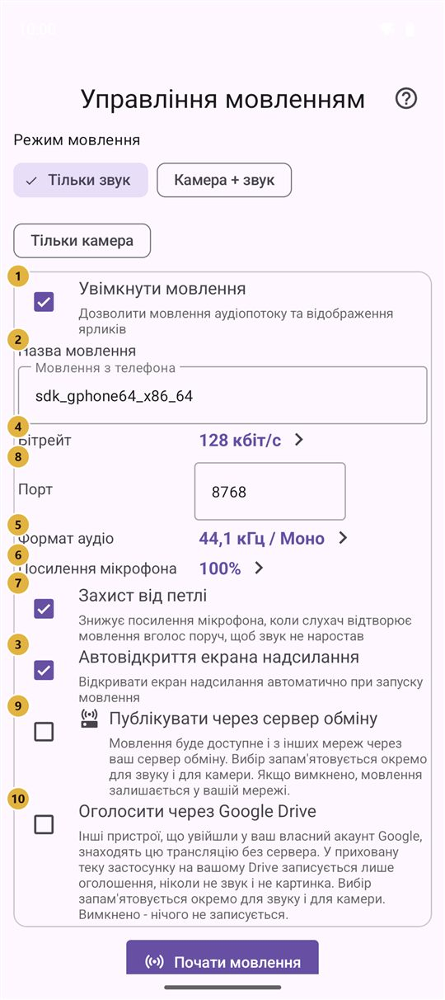
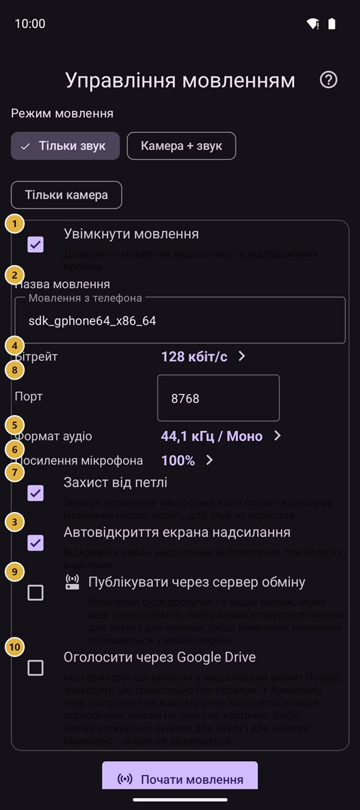

Налаштування мовлення
Для чого цей екран
Вибір, що визначає ваші мовлення: як воно називається, як звучить і де його можна знайти. Це сторінка «Трансляція» в налаштуваннях, вона відкривається з меню налаштувань або кнопкою «Налаштування мовлення» на екрані «Управління мовленням» і зберігається на наступний раз. Поки пряме мовлення вимкнено, на сторінці є лише шлях до його ввімкнення на сторінці «Основні».


Порядок дій
У цих налаштувань немає визначеного порядку. Нижче їх згруповано за призначенням.
Елементи
Мовлення
1Назва мовленняІм'я, яке бачать слухачі.
Показується в списку каналів у слухача. Якщо залишити порожнім, використовується ім'я за замовчуванням «Мовлення з телефона».
Звук
3БітрейтСкільки даних займає секунда звуку.
Чим вищий бітрейт, тим чистіший звук і тим більша витрата мережі. Для слабкого з'єднання виберіть менший.
4Формат аудіоЧастота дискретизації, моно або стерео.
Показує частоту дискретизації в кГц і те, чи звук моно, чи стерео. Стерео несе більше даних, ніж моно.
5Посилення мікрофонаГучність мікрофона.
Підвищує або знижує рівень мікрофона для всіх слухачів.
6Захист від петліНе дає телефонам «свистіти».
Зменшує посилення мікрофона, коли слухач вмикає мовлення вголос поруч, щоб звук не наростав. Попередження на екрані «Управління мовленням» повідомляє, що захист спрацював.
Як дійти до слухачів
7ПортМережевий порт мовлення.
Пристрої у вашій мережі підключаються до цього порту. Змінюйте його, лише якщо порт за замовчуванням уже зайнятий іншою програмою.
- Скасування
- Введіть попередній номер.
8Оголосити через Google Drive: звукОголошує мовлення через ваш Google Drive.
Інші пристрої, що увійшли у ваш власний акаунт Google, знаходять це мовлення без сервера. У приховану теку застосунку на вашому Drive записується лише оголошення, ніколи не звук і не картинка. Якщо вимкнено, нічого не записується.
- Скасування
- Вимкніть.
9Оголосити через Google Drive: камераТой самий вибір для режимів із камерою.
Два режими з камерою ділять цей вибір; рядок вище стосується мовлення звуку. Працює так само.
- Скасування
- Вимкніть.